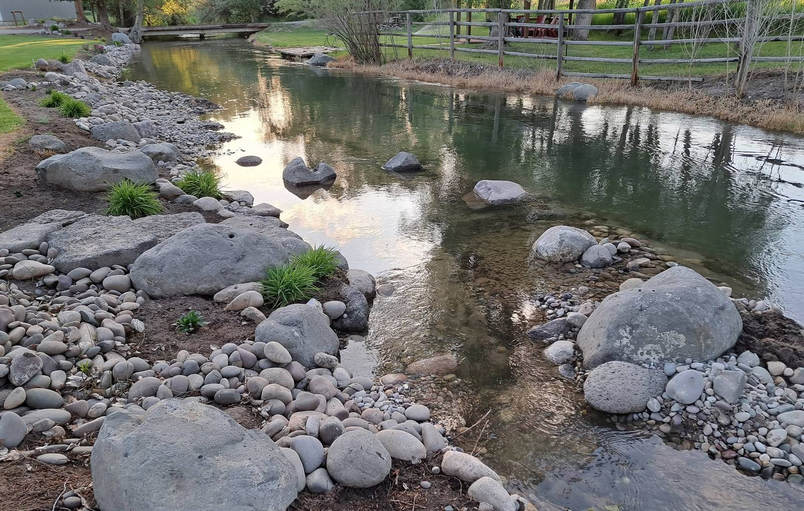
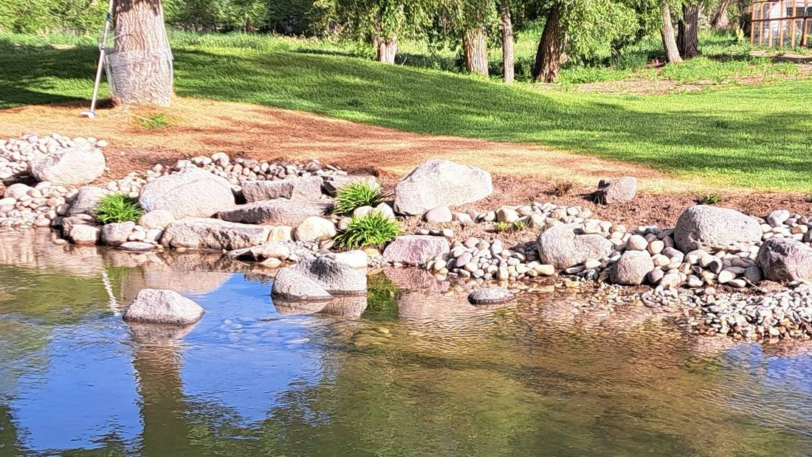
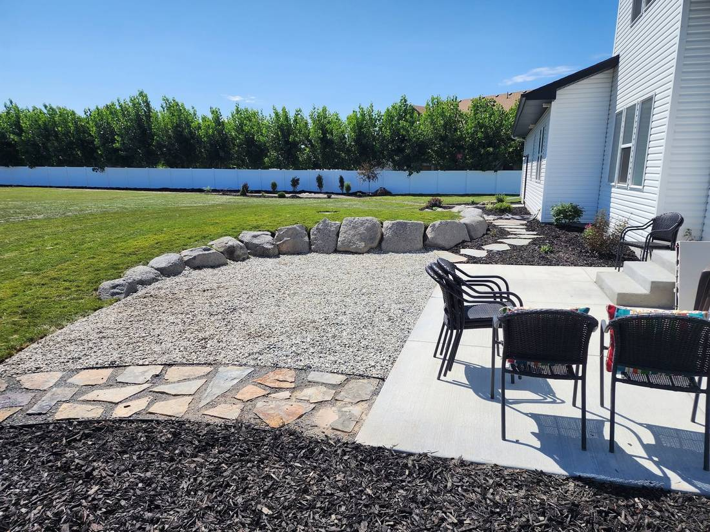
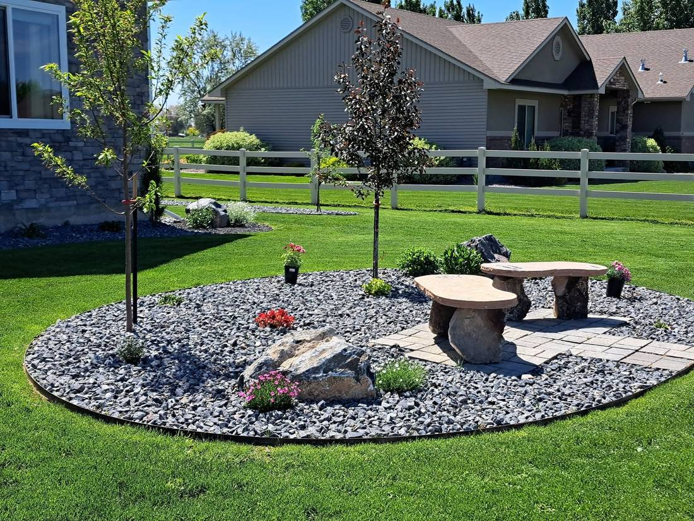
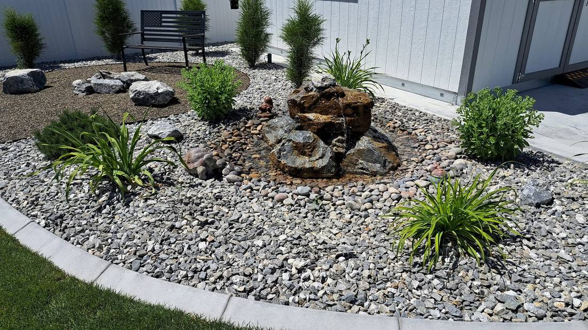
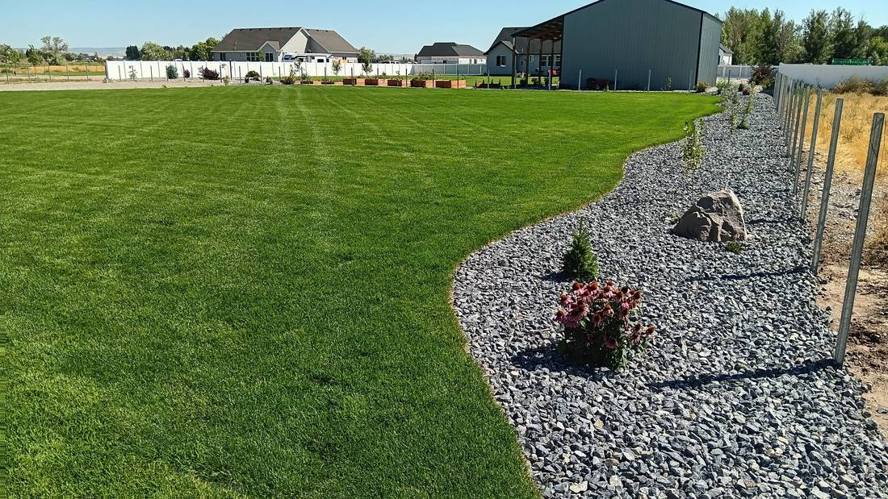
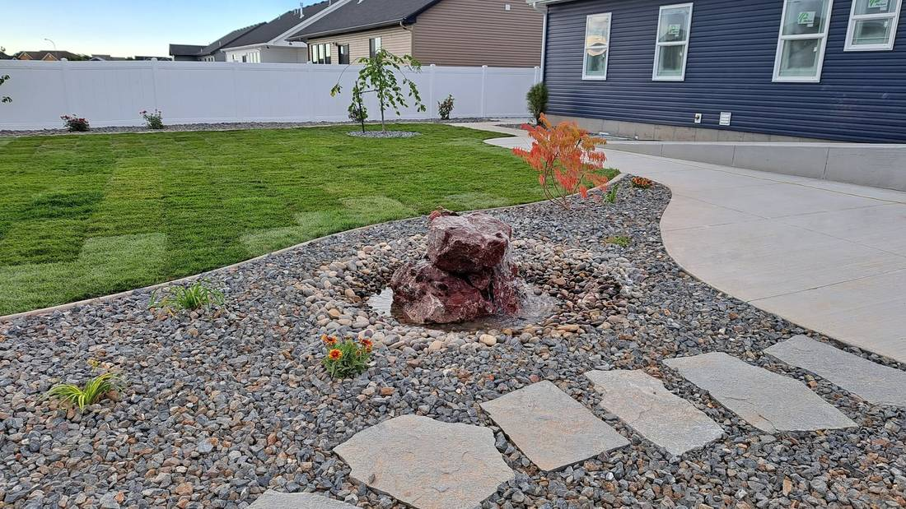

Work In The Ground
Finished properties around Rigby.
Rock work, constructed creeks, sod, and planting beds installed by Reliable Landscape and Irrigation. Every photo below was posted by the crew on their own Facebook page.
Water Features
Natural Creek Canal.
Two frames from the crew's own water features album. A dug and lined watercourse, edged in river boulder and cobble so the water reads as though it had always run there.



Beds, Rock Work & Lawn
Where the planting meets the stone.
Bed shapes, gravel borders, flagstone runs, and fresh sod. The parts of a property people actually walk through.




Photos posted by Reliable Landscape and Irrigation on their own Facebook page.
Your Property Next
Call and describe what you are looking at.
Sprinklers, sod, hydroseed, pruning, or a water feature. Estimates are free.